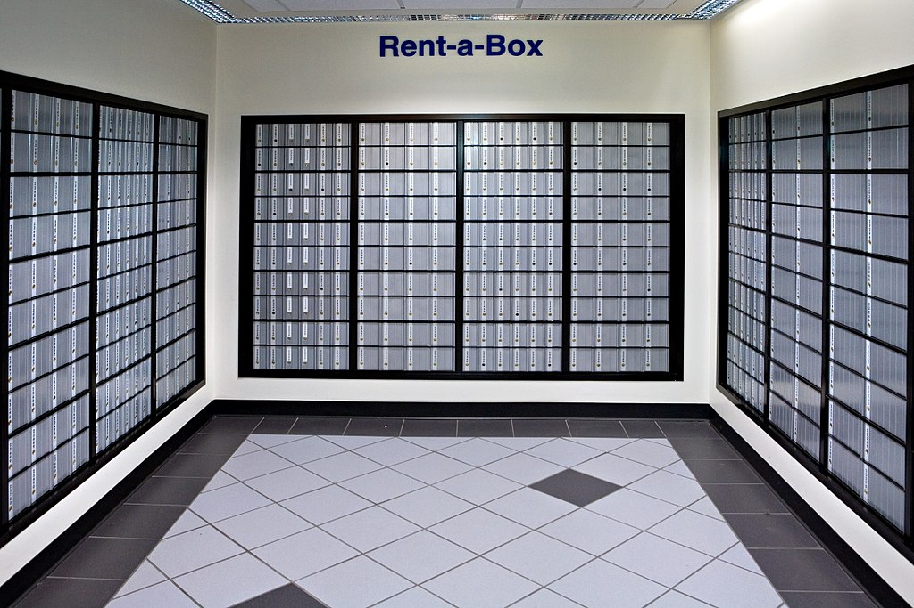

Collections
Arrays
In this lesson, we are going to cover PowerShell Arrays.
Before you begin:
In this lesson, we will be using PowerShell files you can find in the following github repo in a folder named PowerShell_Collections: https://github.com/PowerShellFieldGuide/Examples. If you have never used Github before, for full instructions on how to download this file, please see my page on Getting Started.
What is an array?
What is an Array? An array is a data structure that is a collection of elements. Each element is identified by an index. Arrays may be called by different names in different languages. They are similar to the list data structure in Python. Arrays in PowerShell have a fixed length and are mutable. More on this later. In PowerShell, the Array data type is represented as <data type>[], for instance string[] or int[] for string arrays and integer arrays.
This definition is a bit abstract though. I'm going to try to use a somewhat original simile here and say an array is like a a PO box. If you have ever had a PO Box you know that it is composed of one or more rows and one or more columns of numbered metal boxes with doors on them. If you have never had a PO Box (are they called something different internationally?) I have conveniently provided a picture for you.

Wikimedia Commons: United States Postal Service / CC BY-SA
{kind=link}
When you rent a PO Box, you are given the number of a box and a key with the number to access the box. You use the number of the PO Box to find it and retrieve your mail. The post office employees also use the box number to fill your box with mail.
This is much like how an array works in PowerShell. You can think of an array as having numbered boxes where you can store values. The way you access or change the data in the boxes is by using the numbers associated with the box. We call these "boxes" elements and there are numbered with the first element starting with 0. You will find that this is how most programming languages handle numbering and it is zero-based numbering. Here is a fun paper arguing why zero-based numbering is best from Dr. Edsger W Dykstra written in 1982: https://www.cs.utexas.edu/users/EWD/ewd08xx/EWD831.PDF If you don't like it now, eventually you will.
Let's go back to our original definition. I mentioned that arrays in PowerShell are of a fixed size. Think about the PO boxes again. They're constructed out of metal and fitted into the wall. It would be possible to add more if we needed to, but it would be pretty involved. We might even have to build an additional wing on the building for more room. It definitely would be an involved and dare-I-say resource intensive process. We now have covered the strength and weakness of an array - it is very quick to look up the value of an element or change the value of an element, but it is very slow and resource intensive to insert or add elements to an array, since it involves creating a new array and copying the old values to the new cells.
Example 1
In the first example we see what is probably the simplest syntax in PowerShell for creating an array. Here on line 1 we initialize a variable named $BreakfastArray that is three elements long and contains three strings: "Spam", "Eggs", "Bacon". We are able to do this in PowerShell by just seperating these strings by commas. This is not the most common syntax that you will encounter for initializing arrays in PowerShell and I would discourage using it. It works, but it is slightly more ambiguous than the other ways of creating arrays.
Next on line 3, we call the getType() method on the $BreakfastArray to display it's type. In the output, we can see that the BaseType is System.Array. This is the .Net namespace the array object lives in. The type accelerator (remember those guys?) for an object array in PowerShell is [object[]]. This type of array will store objects in its elements, so can store different types, such as strings or int32s. There are also other array types, such as [string[]] or [int[]] which will only accomodate element values that are strings or int32s, respectively. This is a feature of OOP called polymorphism. I don't want to dive too deep into that right now, but thought it was important to mention.
The next lines display the output to the console. Line 5 just creates a blank line. Next we have a line that displays the total number of elements the array contains. We get this number by calling the .count method on our array. On line 7, PowerShell writes "Element 0 is: " and the value of the first element to the console. PowerShell repeats this on lines 8 and 9 for the next elements. On line 10, PowerShell writes the text "Displaying the whole array looks like this: " and then writes the contents of the array to the console.
Output:
Example 2
In example 2, we encounter what is probably the most common syntax for creating arrays in PowerShell. Here we use what is called the array sub-expresion operator in PowerShell. We begin with the commercial at sign followed by parentheses. The array sub-expression operator will take the statement inside of the parentheses and place it inside of an array.
This operator is great - what it means is unambiguous and you can even use it to create arrays of 0 length.
Output:
Example 3
Here we see yet another way to create arrays, which is quite useful when working with For loops. This syntax is less common than the array sub-expression operator, but is something you will definitely want to know about. Line 1 might look a little bit weird at first, but consider that everything to the left of the equal sign is something you definitely understand. Following that, things start to look a little bit hairier, but we know that [object[]] is just the type accelerator for an array object from example 1. That just leaves ::new(3). I told you that PowerShell uses the .Net framework for it's base types before. Well, Arrays are one of PowerShell's base types, so therefore comes from the .Net framework. All .Net framework classes have a static method named new() by default. When we get to the lesson on classes, I will go into more detail on what a static method is, but for now you can think of the new() method as a built-in way to create an object of that type. The number we provide the new method is the length we want our array to be when it is created. We pass in the number 3, so get an array with 3 elements.
Following this we assign string values to our elements using the same syntax we used to access our element values before followed by the equals assignment operator and the value to be assigned. We then display the results as we have before.
Output:
Example 4

I don't think you're going to use multidimensional arrays in PowerShell. The only reason I have this example here is because you cannot create a multidimensional array using nested array sub-expression operators. You have to use the static new method on an object of type [object[,]] NOT type [object[]]. Notice that you set the length by providing two values seperated by a common in the new method.
I really don't recommend using this in your code unless it's really going to be worth it. It's not so much that multidimensional arrays aren't useful, it's more that they are so uncommon to encounter you might confuse a lot of people when they first see it. I always try as best as I can to stick to conventions and use the most commonly used features when I write my scripts because I assume at some point someone else is going to have to understand mt code.
Output:

Looping through array items with For
In this example, I have a for loop that will iterate over the items in an array. Iterating over the items in an collection is something you will need to do so often (this is pretty much the point of collections) that PowerShell has a special construct for just this purpose. We will be looking at this in the next lesson on Foreach loops.